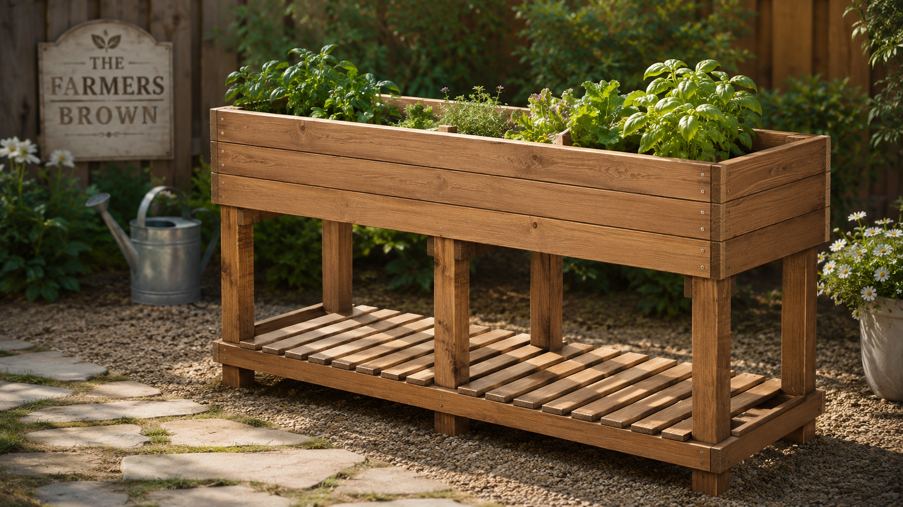
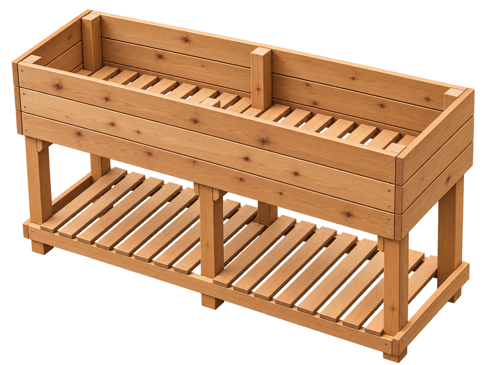
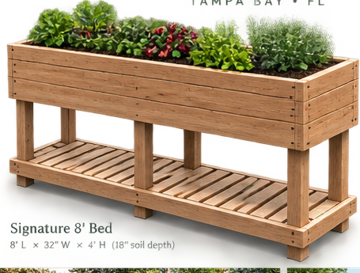
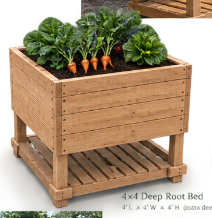
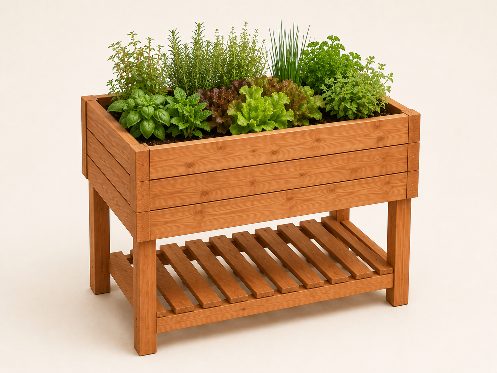
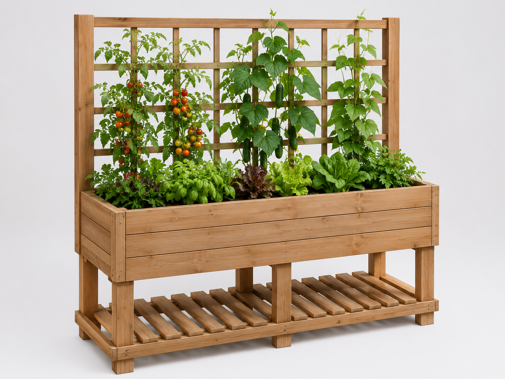
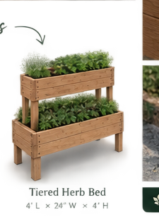
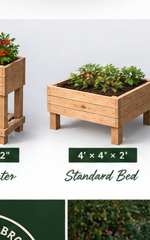
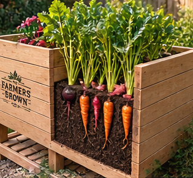

Garden builds
Hand-built raised and elevated beds, trellises, potting benches, plant stands, compost stations, and useful custom garden structures.
- Signature tall beds
- Custom-fit layouts
- Delivery and installation
Build. Plant. Grow.
We help Tampa Bay families start successful home gardens—from hand-built raised beds and aeroponic towers to starter plants, complete installations, and seasonal support.


The Farmers Brown Giveaway
We’re preparing a local promotional sweepstakes built around our tall, hand-built elevated garden bed. The final prize package, entry period, eligibility area, and Official Rules will all be posted before entries open.
Your local garden one-stop shop
Some families just need a strong structure. Others want to walk outside to a garden that is already filled, planted, labeled, and ready to tend. The Farmers Brown meets you wherever you are.
What we do
Start with one service or let us put the whole system together for you.
Hand-built raised and elevated beds, trellises, potting benches, plant stands, compost stations, and useful custom garden structures.
We build the bed, fill it with the right growing mix, install Florida-appropriate starters, label everything, and show you how to care for it.
Let us source or assemble your aeroponic tower, start the seedlings, prepare the system, and help you feel confident using it.
Healthy locally grown starters, herbs, replacement plants, and curated garden packs chosen for the season and your setup.
Seasonal refreshes, replanting, troubleshooting, irrigation checks, soil amendments, pest guidance, and hands-on coaching.
Our bed lineup
Using the same durable, elevated construction language, we can build around the crop, the footprint, and the way you want to garden.

8' L × 32" W × 4' H
Our standout standing-height garden bed—great for families who want generous growing space without constant bending.

4' L × 4' W × 4' H
Designed extra deep for root crops and dense kitchen-garden planting while keeping the same sturdy elevated base and storage shelf.

4' L × 32" W × 4' H
A smaller-footprint version for patios, narrower side yards, or first gardens.

8' L × 32" W × 4' H
Add a built-in trellis for tomatoes, cucumbers, beans, and other vertical growers.

4' L × 24" W × 4' H
A compact stacked option for herbs, lettuces, and decorative edible plantings.

Ground-level cedar build
A traditional raised bed for larger growing volume, row-style planting, and backyard kitchen gardens.
Why depth matters
The new deep-root planter gives root vegetables the extra soil depth they need while keeping the convenience of an elevated bed. It’s a great fit for kitchen gardens focused on practical food production.

Pick your starting point
No pressure to buy the whole farm. Choose the package that solves the problem in front of you.
You need a strong, attractive bed or garden structure and want to take it from there.
Ask about a build →You want the full garden installed with soil, starters, labels, and a simple care plan.
See Garden-in-a-Day →You have a garden, but want seasonal replanting, troubleshooting, or a knowledgeable extra set of hands.
Ask about garden care →Our flagship setup
One visit can turn an unused patch of yard or patio into a planted, productive garden.
Plan the right setupWe look at your space, sunlight, goals, and comfort needs.
Build and installYour bed, tower, trellis, soil, and irrigation options are handled.
Plant for the seasonWe install healthy starters that make sense for Tampa Bay now.
Teach you the gardenYou get labels, a care guide, and a walkthrough before we leave.
An empty corner and a good intention.
A garden that is already growing.
Made for Tampa Bay
Heat, humidity, intense rain, pests, sunlight, and planting windows all shape what will thrive. We help you choose a setup and seasonal plants that make sense here—not just what looked good on a national seed packet.
How it works
We keep the process practical, personal, and easy to understand.
Send photos, approximate dimensions, and what you would love to grow.
Structure only, a complete planted setup, a tower, starters, or ongoing care.
We confirm the plan and price, then build, deliver, plant, and explain.
Meet the Browns
We are Tyler and Amanda Brown—two real people who believe useful work should support local families and that more families should know exactly where some of their food came from.
Tyler brings the building, problem-solving, and custom fabrication. Amanda brings the plants, seedlings, and increasingly ambitious growing operation. Together, we help our neighbors go from wanting a garden to actually having one.
When you work with The Farmers Brown, the people who plan your garden are the same people who build it, grow your plants, and answer your questions afterward.
Start a garden with usLet’s grow something useful
Share a few details and we will follow up to discuss the right setup, available starters, timing, and pricing.